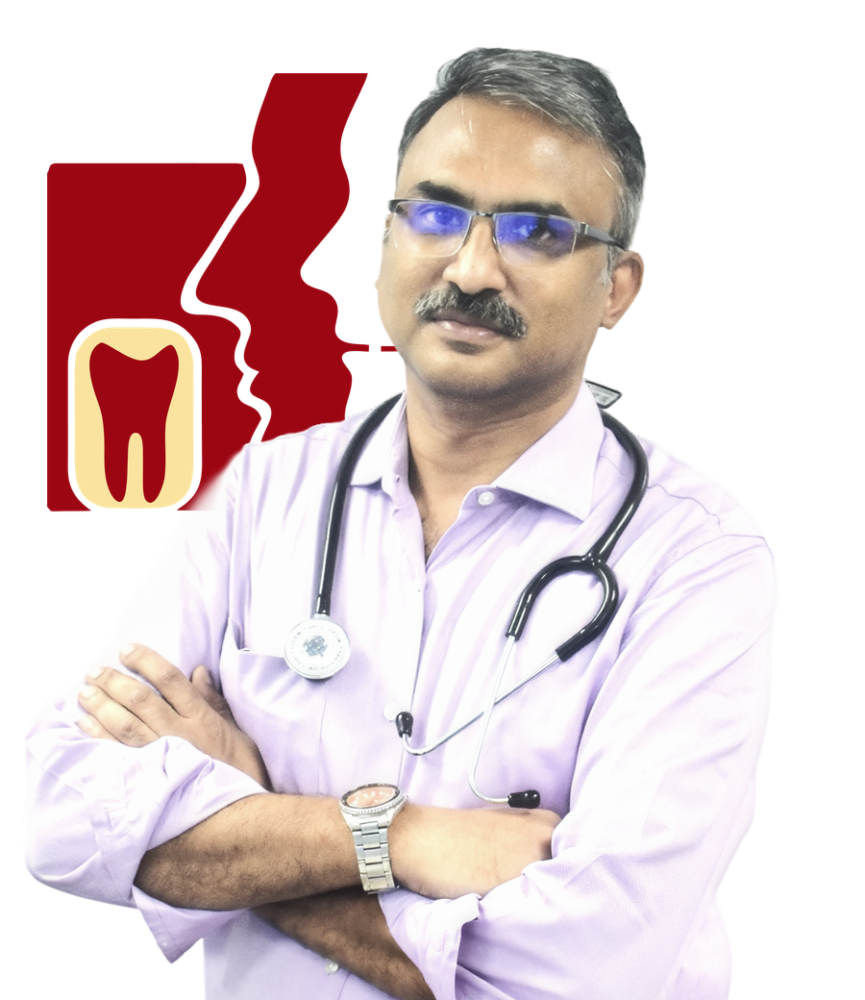

Saving faces and changing lives
A one-of-a-kind, modern purpose-built centre in the heart of Madurai, bringing together maxillofacial surgery, craniofacial surgery, orthodontics and implantology under one roof, with consultants trained in India, the UK and Ireland.

- 7,500Sq ft purpose-built facility
- 20+Years of consultant experience
- 9Surgical & dental specialties
- NABHReady & Govt. of Tamil Nadu registered
The centre
Welcome to Shanker Dental and Craniofacial Centre
-
01
Shanker Dental and Craniofacial Centre is a one of a kind, modern purpose-built centre situated in the heart of Madurai having a clinically clean but comfortable and relaxing environment with all the latest hi-tech equipment needed for treating complex facial surgical and non-surgical cases.
-
02
We have all the necessary infrastructure under one roof including state of the art dental treatment suites, Dental and Maxillofacial radiology (including fully digital OPG and Cephalometry, full mouth X-ray facility), modern integrated operating theatres with anaesthesia workstations with ventilators, LED lights, multi-parameter monitors, defibrillators, infusion pumps and so on.
-
03
Our doctors are very highly qualified having extensive hands-on experience in both India and the UK. We meet all international standards that would be expected by a similar surgical setup anywhere in the western world. All of this enables us to provide the highest quality care for our patients.


Standards
Built to international surgical standards
We currently meet and vastly exceed all the standards required by the government of India as per the latest Clinical Establishment Act and are NABH ready. We are fully recognised and registered with the Govt of Tamilnadu, India for both outpatient and In-patient treatment.
Our Centre has also been involved in super-specialty training in maxillofacial surgery and orthodontics (post MDS graduates) and we regularly train and pass on our knowledge and skills to the next generation of Maxillofacial surgeons and Orthodontists. We also have a tie-up with recognised nursing institutes for specialised training of nursing graduates in maxillofacial surgery.
- Fully digital OPG, Cephalometry and RVG imaging on site, no need to go elsewhere for X-rays
- Integrated operating theatres with ventilators, defibrillators and multi-parameter monitoring
- Strict sterilisation protocols with cassette-based instrument packs and disposables throughout
- Treatment delivered only by postgraduate-qualified consultants
What we treat
A full range of facial surgery and dentistry
Maxillofacial surgery and orthodontics concern surgical and non-surgical treatment of the face, head, neck and jaws. We do the entire range of maxillofacial procedures at our centre and our results are comparable to the best centres in the world.

Maxillofacial Surgery
The diagnosis and treatment of diseases affecting the mouth, jaws, face and neck, the full scope of the specialty.
Explore Maxillofacial Surgery
Craniofacial Surgery
Correction of craniosynostosis and syndromic skull deformity, performed by a joint neurosurgical-maxillofacial team.
Explore Craniofacial Surgery
Facial Deformity Correction
Orthognathic (corrective jaw) surgery for elongated, shortened or asymmetric jaws, done from inside the mouth.
Explore Facial Deformity Correction
Facial Trauma Surgery
Open reduction and internal fixation of facial fractures using micro and miniplate systems for anatomical results.
Explore Facial Trauma Surgery
Cleft Lip & Palate Surgery
The only centre in Madurai with full-time orthodontic and surgical specialists for complete cleft care under one roof.
Explore Cleft Lip & Palate Surgery
TMJ: Jaw Joint Surgery
Release of temporomandibular joint ankylosis, gap arthroplasty and multiplanar osteodistraction.
Explore TMJ: Jaw Joint Surgery
Pathology: Head & Neck
Diagnosis and treatment of benign and malignant lesions, with wide resection and reconstruction where needed.
Explore Pathology: Head & Neck
Orthodontics
Fixed, removable and functional appliances plus certified Invisalign clear aligner treatment for adults and children.
Explore Orthodontics
Dental & Facial Implants
Single and full-arch implants, zygoma implants and natural or synthetic bone grafting for compromised bone.
Explore Dental & Facial ImplantsOur consultants
Trained in India, the UK and Ireland
Dr Shanker Mohan trained at the Royal London Hospital, UK, and served four years in the National Maxillofacial Unit in Dublin, Ireland. He holds fellowships in maxillofacial surgery from the Royal Colleges of Surgeons of both England and Ireland.
Dr Aijitha Shanker is a specialist in Orthodontics and Dentofacial Orthopaedics and a certified Invisalign provider, with a special interest in facial deformity and cleft lip and palate.
-

Dr Shanker Mohan
MDS, AO/ASIF, FFDRCS, FDSRCS
-

Dr Aijitha Shanker
BDS, MDS (Orthodontia)
Teaching
Interesting Case of the Month
Every month we document an interesting case from our theatre lists, published to educate patients and colleagues about facial surgery, its complications and its possible solutions.
References
What his consultants say
-
“He is an excellent clinician, surgeon and academic. He has an excellent pair of hands with a deft touch.”
-
“Shanker has been an outstanding surgeon. He is hard working and is an excellent Clinician and has mastered a full range of surgical procedures within the specialty.”
-
“In that time I would rate him as one of the best staff we have had. Shanker is always punctual, polite, and most of all reliable.”
Ready to talk to a specialist?
We are located 2 minutes’ walk from the Anna Bus Stand, with adequate off-street car parking.